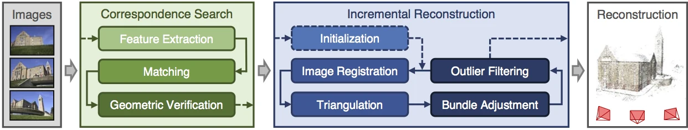

Tutorial#
This tutorial covers the topic of image-based 3D reconstruction by demonstrating the individual processing steps in COLMAP. If you are interested in a more general and mathematical introduction to the topic of image-based 3D reconstruction, please also refer to the CVPR 2017 Tutorial on Large-scale 3D Modeling from Crowdsourced Data and [schoenberger_thesis].
Image-based 3D reconstruction from images traditionally first recovers a sparse representation of the scene and the camera poses of the input images using Structure-from-Motion. This output then serves as the input to Multi-View Stereo to recover a dense representation of the scene.
Quickstart#
First, start the graphical user interface of COLMAP, as described here. COLMAP provides an automatic reconstruction tool that simply takes
a folder of input images and produces a sparse and dense reconstruction in a
workspace folder. Click Reconstruction > Automatic Reconstruction in the GUI
and specify the relevant options. The output is written to the workspace folder.
For example, if your images are located in path/to/project/images, you could
select path/to/project as a workspace folder and after running the automatic
reconstruction tool, the folder would look similar to this:
+── images
│ +── image1.jpg
│ +── image2.jpg
│ +── ...
+── sparse
│ +── 0
│ │ +── rigs.bin
│ │ +── cameras.bin
│ │ +── frames.bin
│ │ +── images.bin
│ │ +── points3D.bin
│ +── ...
+── dense
│ +── 0
│ │ +── images
│ │ +── sparse
│ │ +── stereo
│ │ +── fused.ply
│ │ +── meshed-poisson.ply
│ │ +── meshed-delaunay.ply
│ │ +── meshed-advancing-front.ply
│ +── ...
+── database.db
Here, the path/to/project/sparse contains the sparse models for all
reconstructed components, while path/to/project/dense contains their
corresponding dense models. The dense point cloud fused.ply can be imported
in COLMAP using File > Import from ..., while the dense mesh must be
visualized with an external viewer such as Meshlab.
The same automatic reconstruction can be run from the command-line, without the
GUI, using the automatic_reconstructor command, which produces the identical
workspace layout shown above:
colmap automatic_reconstructor \\
--workspace_path path/to/project \\
--image_path path/to/project/images
The following sections give general recommendations and describe the reconstruction process in more detail, if you need more control over the reconstruction process/parameters or if you are interested in the underlying technology in COLMAP.
Preface#
COLMAP requires only a few steps to perform a standard reconstruction for a
general user. For more experienced users, the program exposes many different parameters,
only some of which are intuitive to a beginner. The program should usually work
without the need to modify any parameters. The defaults are chosen as a trade-
off between reconstruction robustness/quality and speed. You can set “optimal”
options for different reconstruction scenarios by choosing Extras > Set
options for ... data. If in doubt what settings to choose, stick to the
defaults. The source code contains more documentation about all parameters.
COLMAP is research software, and in rare cases it may exit ungracefully if some constraints are not fulfilled. In this case, the program prints a traceback to stderr. To see this traceback or more debug information, it is recommended to run the executables (including the GUI) from the command-line, where you can also define various levels of logging verbosity.
Structure-from-Motion#

COLMAP’s incremental Structure-from-Motion pipeline.#
Structure-from-Motion (SfM) is the process of reconstructing 3D structure from its projections into a series of images. The input is a set of overlapping images of the same object, taken from different viewpoints. The output is a 3-D reconstruction of the object, and the reconstructed intrinsic and extrinsic camera parameters of all images. Typically, Structure-from-Motion systems divide this process into three stages:
Feature detection and extraction
Feature matching and geometric verification
Structure and motion reconstruction
COLMAP reflects these stages in different modules that can be combined depending on the application. More information on Structure-from-Motion in general and the algorithms in COLMAP can be found in [schoenberger16sfm] and [schoenberger16mvs].
If you have control over the picture capture process, please follow these guidelines for optimal reconstruction results:
Capture images with good texture. Avoid completely texture-less images (e.g., a white wall or empty desk). If the scene does not contain enough texture itself, you could place additional background objects, such as posters, etc.
Capture images at similar illumination conditions. Avoid high dynamic range scenes (e.g., pictures against the sun with shadows or pictures through doors/windows). Avoid specularities on shiny surfaces.
Capture images with high visual overlap. Make sure that each object is seen in at least 3 images – the more images the better.
Capture images from different viewpoints. Do not take images from the same location by only rotating the camera, e.g., make a few steps after each shot. At the same time, try to have enough images from a relatively similar viewpoint. Note that more images are not necessarily better and might lead to a slow reconstruction process. If you use a video as input, consider down-sampling the frame rate.
Multi-View Stereo#
Multi-View Stereo (MVS) takes the output of SfM to compute depth and/or normal information for every pixel in an image. Fusion of the depth and normal maps of multiple images in 3D then produces a dense point cloud of the scene. Using the depth and normal information of the fused point cloud, algorithms such as the (screened) Poisson surface reconstruction [kazhdan2013] or the advancing front surface reconstruction [cohen-steiner2004] can then recover the 3D surface geometry of the scene. The resulting meshes can optionally be simplified using Quadric Error Metric (QEM) decimation [garland1997] to reduce their complexity while preserving shape and appearance. Additionally, the meshes can be textured using multi-view texture mapping [waechter2014], which assigns each face to the best-view camera image and produces a texture atlas with UV coordinates. More information on Multi-View Stereo in general and the algorithms in COLMAP can be found in [schoenberger16mvs].
Terminology#
The term camera refers to a physical camera using the same zoom factor and lens. A camera defines the intrinsic projection model in COLMAP. A single camera can take multiple images with the same resolution, intrinsic parameters, and distortion characteristics. The term image is associated with a bitmap file, e.g., a JPEG or PNG file on disk. COLMAP detects keypoints in each image whose appearance is described by numerical descriptors. Pure appearance-based correspondences between keypoints/descriptors are defined by matches, while inlier matches are geometrically verified and used for the reconstruction procedure.
The term rig describes a fixed assembly of one or more cameras whose relative
poses are constant over time, e.g., a stereo or multi-camera setup, or a single
moving camera (a trivial rig with one camera). The term frame denotes a
single snapshot in time, i.e., the set of images captured simultaneously by all
cameras of a rig. A frame therefore groups images that share the same rig pose,
and COLMAP optimizes one pose per frame rather than one pose per image. Rigs and
frames are stored as rigs.bin and frames.bin in the reconstruction output
(see Rig Support and Output Format).
Data Structure#
COLMAP assumes that all input images are in one input directory with potentially nested sub-directories. It recursively considers all images stored in this directory, and it supports various image formats through OpenImageIO. Other files are automatically ignored. If high performance is a requirement, then you should separate any files that are not images. Images are identified uniquely by their relative file path. For later processing, such as image undistortion or dense reconstruction, the relative folder structure should be preserved. COLMAP does not modify the input images or directory and all extracted data is stored in a single, self-contained SQLite database file (see Database Format).
The first step is to start the graphical user interface of COLMAP by running the
pre-built binaries (Windows: COLMAP.bat, Mac: COLMAP.app) or by executing
./src/colmap/exe/colmap gui from the CMake build folder. Next, create a new project
by choosing File > New project. In this dialog, you must select where to
store the database and the folder that contains the input images. For
convenience, you can save the entire project settings to a configuration file by
choosing File > Save project. The project configuration stores the absolute
path information of the database and image folder in addition to any other
parameter settings. If you decide to move the database or image folder, you must
change the paths accordingly by creating a new project. Alternatively, the
resulting .ini configuration file can be directly modified in a text editor of
your choice. To reopen an existing project, you can simply open the
configuration file by choosing File > Open project and all parameter
settings should be recovered. Note that all COLMAP executables can be started
from the command-line by either specifying individual settings as command-line
arguments or by providing the path to the project configuration file (see
Interface).
An example folder structure could look like this:
/path/to/project/...
+── images
│ +── image1.jpg
│ +── image2.jpg
│ +── ...
│ +── imageN.jpg
+── database.db
+── project.ini
In this example, you would select /path/to/project/images as the image folder
path, /path/to/project/database.db as the database file path, and save the
project configuration to /path/to/project/project.ini.
Feature Detection and Extraction#
In the first step, feature detection/extraction finds sparse feature points in the image and describes their appearance using a numerical descriptor. COLMAP imports images and performs feature detection/extraction in a single step, so that each image is loaded from disk only once.
Next, choose Processing > Extract features. In this dialog, you must first
decide on the intrinsic camera model to use. You can either automatically
extract focal length information from the embedded EXIF information or manually
specify intrinsic parameters, e.g., as obtained in a lab calibration. If an
image has partial EXIF information, COLMAP tries to find the missing camera
specifications in a large database of camera models automatically. If all your
images were captured by the same physical camera with identical zoom factor, it
is recommended to share intrinsics between all images. Note that the program
will exit ungracefully if the same camera model is shared among all images but
not all images have the same size or EXIF focal length. If you have several
groups of images that share the same intrinsic camera parameters, you can easily
modify the camera models at a later point as well (see Database Management). If in doubt what to choose in this step, simply stick
to the default parameters.
You can either detect and extract new features from the images or import
existing features from text files. By default, COLMAP extracts SIFT [lowe04]
features either on the GPU or the CPU. When COLMAP is built with CUDA support
(recommended), GPU feature extraction runs without an attached display and is
suitable for headless servers. The OpenGL-based fallback (used when CUDA is not
available) instead requires an attached display, so on such systems the CPU
version is recommended for use on a server. In general, the GPU version is
favorable, as it has a customized feature detection mode that often produces
higher-quality features for high-contrast images.
COLMAP also supports ALIKED feature extraction, a learned feature extractor
using ONNX models, which can be selected via the --FeatureExtraction.type
option (see Feature Extraction and Matching for details). If
you import existing features, every image must have a text file next to it (e.g.,
/path/to/image1.jpg and /path/to/image1.jpg.txt) in the following format:
NUM_FEATURES 128
X Y SCALE ORIENTATION D_1 D_2 D_3 ... D_128
...
X Y SCALE ORIENTATION D_1 D_2 D_3 ... D_128
where X, Y, SCALE, ORIENTATION are floating point numbers and D_1...D_128
values in the range 0...255. The file should have NUM_FEATURES lines with
one line per feature. For example, if an image has 4 features, then the text
file should look something like this:
4 128
1.2 2.3 0.1 0.3 1 2 3 4 ... 21
2.2 3.3 1.1 0.3 3 2 3 2 ... 32
0.2 1.3 1.1 0.3 3 2 3 2 ... 2
1.2 2.3 1.1 0.3 3 2 3 2 ... 3
Note that by convention the upper left corner of an image has coordinate
(0, 0) and the center of the upper left most pixel has coordinate
(0.5, 0.5). If you must import features for large image collections, it is
much more efficient to directly access the database with your favorite scripting
language (see
Database Format).
If you are done setting all options, choose Extract and wait for the
extraction to finish or cancel. If you cancel during the extraction process, the
next time you start extracting images for the same project, COLMAP automatically
continues where it left off. This also allows you to add images to an existing
project/reconstruction. In this case, be sure to verify the camera parameters
when using shared intrinsics.
All extracted data will be stored in the database file and can be reviewed/managed in the database management tool (see Database Management) or, for experts, directly modified using SQLite (see Database Format).
Feature Matching and Geometric Verification#
In the second step, feature matching and geometric verification finds correspondences between the feature points in different images.
Please choose Processing > Feature matching and select one of the provided
matching modes, which are intended for different input scenarios:
Exhaustive Matching: If the number of images in your dataset is relatively low (up to several hundreds), this matching mode should be fast enough and lead to the best reconstruction results. Here, every image is matched against every other image, while the block size determines how many images are loaded from disk into memory at the same time.
Sequential Matching: This mode is useful if the images are acquired in sequential order, e.g., by a video camera. In this case, consecutive frames have visual overlap and there is no need to match all image pairs exhaustively. Instead, consecutively captured images are matched against each other. This matching mode has built-in loop detection based on a vocabulary tree, where every N-th image (
--SequentialMatching.loop_detection_period) is matched against its visually most similar images (--SequentialMatching.loop_detection_num_images). Note that image file names must be ordered sequentially (e.g.,image0001.jpg,image0002.jpg, etc.). The order in the database is not relevant, since the images are explicitly ordered according to their file names. Note that loop detection requires a pre-trained vocabulary tree. A default tree will be automatically downloaded and cached. More trees are available and can be downloaded from https://demuc.de/colmap/. In case rigs and frames are configured appropriately in the database, sequential matching will automatically match all images in consecutive frames against each other.Vocabulary Tree Matching: In this matching mode [schoenberger16vote], every image is matched against its visual nearest neighbors using a vocabulary tree with spatial re-ranking. This is the recommended matching mode for large image collections (several thousands). This requires a pre-trained vocabulary tree, that can be downloaded from https://demuc.de/colmap/.
Spatial Matching: This matching mode matches every image against its spatial nearest neighbors. Spatial locations can be manually set in the database management. By default, COLMAP also extracts GPS information from EXIF and uses it for spatial nearest neighbor search. If accurate prior location information is available, this is the recommended matching mode.
Transitive Matching: This matching mode uses the transitive relations of already existing feature matches to produce a more complete matching graph. If an image A matches to an image B and B matches to C, then this matcher attempts to match A to C directly.
Custom Matching: This mode allows you to specify individual image pairs for matching or to import individual feature matches. To specify image pairs, you have to provide a text file with one image pair per line:
image1.jpg image2.jpg image1.jpg image3.jpg ...
where
image1.jpgis the relative path in the image folder. You have two options for importing individual feature matches: either raw feature matches, which are not geometrically verified, or already geometrically verified feature matches. In both cases, the expected format is:image1.jpg image2.jpg 0 1 1 2 3 4 <empty-line> image1.jpg image3.jpg 0 1 1 2 3 4 4 5 <empty-line> ...
where
image1.jpgis the relative path in the image folder and the pairs of numbers are zero-based feature indices in the respective images. If you must import many matches for large image collections, it is more efficient to directly access the database with a scripting language of your choice.
If you are done setting all options, choose Match and wait for the matching
to finish or cancel in between. Note that this step can take a significant
amount of time depending on the number of images, the number of features per
image, and the chosen matching mode. Expected times for exhaustive matching are
from a few minutes for tens of images to a few hours for hundreds of images to
days or weeks for thousands of images. Exhaustive matching scales quadratically
with the number of images and quickly becomes impractical for large collections;
for thousands of images or more, use vocabulary tree or sequential matching
instead, which are dramatically faster. If you cancel the matching process or
import new images after matching, COLMAP only matches image pairs that have not
been matched previously. The overhead of skipping already matched image pairs is
low. This also makes it possible to match additional images imported after an
initial matching, and to combine different matching modes for the same dataset.
All extracted data will be stored in the database file and can be reviewed/managed in the database management tool (see Database Management) or, for experts, directly modified using SQLite (see Database Format).
Note that SIFT feature matching can use a GPU for acceleration, and the display
performance of your computer might degrade significantly during the matching
process. If your system has multiple CUDA-enabled GPUs, you can select specific
GPUs with the --FeatureMatching.gpu_index option. Feature matching can also
be performed on the CPU by setting --FeatureMatching.use_gpu 0, although this
will be significantly slower for large datasets.
Sparse Reconstruction#
After producing the scene graph in the previous two steps, you can start the
incremental reconstruction process by choosing Reconstruction > Start.
COLMAP first loads all extracted data from the database into memory and seeds
the reconstruction from an initial image pair. Then, the scene is incrementally
extended by registering new images and triangulating new points. The results are
visualized in “real-time” during this reconstruction process. Refer to the
Graphical User Interface section for more details about the
available controls. COLMAP attempts to reconstruct multiple models if not all
images are registered into the same model. The different models can be selected
from the drop-down menu in the toolbar. If the different models have common
registered images, you can use the model_merger executable to merge them
into a single reconstruction (see FAQ for details).
Ideally, the reconstruction works fine and all images are registered. If this is not the case, it is recommended to:
Perform additional matching. For best results, use exhaustive matching, enable guided matching, increase the number of nearest neighbors in vocabulary tree matching, or increase the overlap in sequential matching, etc.
Manually choose an initial image pair, if COLMAP fails to initialize. Choose
Reconstruction > Reconstruction options > Initand set images from the database management tool that have enough matches from different viewpoints.
Importing and Exporting#
COLMAP provides several export options for further processing. For full
flexibility, it is recommended to export the reconstruction in COLMAP’s data
format by choosing File > Export model to export the currently viewed model
or File > Export all models to export all reconstructed models. The model is
exported in the selected folder using separate text files for the reconstructed
cameras, images, and points. When exporting in COLMAP’s data format, you can
re-import the reconstruction for later visualization, image undistortion, or to
continue an existing reconstruction from where it left off (e.g., after importing
and matching new images). To import a model, choose File > Import model and
select the export folder path. Alternatively, you can export the model in
various other formats, such as Bundler, VisualSfM [1], PLY, or VRML by
choosing File > Export model as.... COLMAP can visualize plain PLY point
cloud files with RGB information by choosing File > Import from .... Further
information about the format of the exported models can be found
here.
Dense Reconstruction#
After reconstructing a sparse representation of the scene and the camera poses
of the input images, MVS can now recover denser scene geometry. COLMAP has an
integrated dense reconstruction pipeline to produce depth and normal maps for
all registered images, to fuse the depth and normal maps into a dense point
cloud with normal information, and to finally estimate a dense surface from the
fused point cloud using Poisson [kazhdan2013] or Delaunay reconstruction.
Optionally, the resulting meshes can be simplified using the mesh_simplifier
command to reduce the number of faces while preserving the overall shape. The
meshes can also be textured using the mesh_texturer command, which produces
a texture atlas and per-face UV coordinates from the undistorted images.
To get started, import your sparse 3D model into COLMAP (or select the
reconstructed model after finishing the previous sparse reconstruction steps).
Then, choose Reconstruction > Multi-view stereo and select an empty or
existing workspace folder, which is used for the output of all dense
reconstruction results. The first step is to undistort the images, second to
compute the depth and normal maps using stereo, third to fuse the depth
and normal maps into a point cloud, followed by a final, optional point cloud
meshing step. These steps are also available from the command-line as the
image_undistorter, patch_match_stereo, stereo_fusion, and
poisson_mesher / delaunay_mesher commands, respectively. During the
stereo reconstruction process, the display might
freeze due to heavy compute load and, if your GPU does not have enough memory,
the reconstruction process might crash ungracefully. Please refer to the FAQ
(freeze and memory) for
information on how to avoid these problems. Note that the reconstructed normals
of the point cloud cannot be visualized directly in COLMAP, but can be viewed in
external tools such as Meshlab by enabling Render > Show Normal/Curvature. Similarly, the reconstructed
dense surface mesh model must be visualized with external software.
In addition to the internal dense reconstruction functionality, COLMAP can
export to several other dense reconstruction libraries, such as CMVS/PMVS
[furukawa10] or CMP-MVS [jancosek11]. Please choose Extras > Undistort images and select
the appropriate format. The output folders contain the reconstruction and the
undistorted images. In addition, the folders contain sample shell scripts to
perform the dense reconstruction. To run PMVS2, execute the following command:
./path/to/pmvs2 /path/to/undistortion/folder/pmvs/ option-all
where /path/to/undistortion/folder is the folder selected in the undistortion
dialog. Make sure not to forget the trailing slash in
/path/to/undistortion/folder/pmvs/ in the above command-line arguments.
For large datasets, you probably want to first run CMVS to cluster the scene into more manageable parts and then run COLMAP or PMVS2. Please refer to the sample shell scripts in the undistortion output folder on how to run CMVS in combination with COLMAP or PMVS2. Moreover, there are a number of external libraries that support COLMAP’s output:
Database Management#
You can review and manage the imported cameras, images, and feature matches in
the database management tool. Choose Processing > Manage database. In the
opening dialog, you can see the list of imported images and cameras. You can
view the features and matches for each image by clicking Show image and
Overlapping images. Individual entries in the database tables can be
modified by double-clicking specific cells. Note that any changes to the
database are only effective after clicking Save.
To share intrinsic camera parameters between arbitrary groups of images, select
one or more images, choose Set camera and set the camera_id,
which corresponds to the unique camera_id column in the cameras table. You can
also add new cameras with specific parameters. By setting the
prior_focal_length flag to 0 or 1, you can give a hint whether the
reconstruction algorithm should trust the focal length value. In case of a prior
lab calibration, you should set this value to 1. Without prior knowledge about
the focal length, it is recommended to set this value to 1.25 *
max(width_in_px, height_in_px).
The database management tool has only limited functionality and, for full control over the data, you must directly modify the SQLite database (see Database Format). By accessing the database directly, you can use COLMAP only for feature extraction and matching, or you can import your own features and matches and use COLMAP solely for its incremental reconstruction algorithm.
Graphical and Command-line Interface#
Most of COLMAP’s features are accessible from both the graphical and the
command-line interface, which are both embedded in the same executable. You can
provide the options directly as command-line arguments or you can provide a
.ini project configuration file containing the options using the
--project_path path/to/project.ini argument. To start the GUI application,
please execute colmap gui or directly specify a project configuration as
colmap gui --project_path path/to/project.ini to avoid tedious selection in
the GUI. To list the different commands available from the command-line, execute
colmap help. For example, to run feature extraction from the command-line,
you must execute colmap feature_extractor. The graphical user
interface and command-line interface sections provide more
details about the available commands.
Footnotes